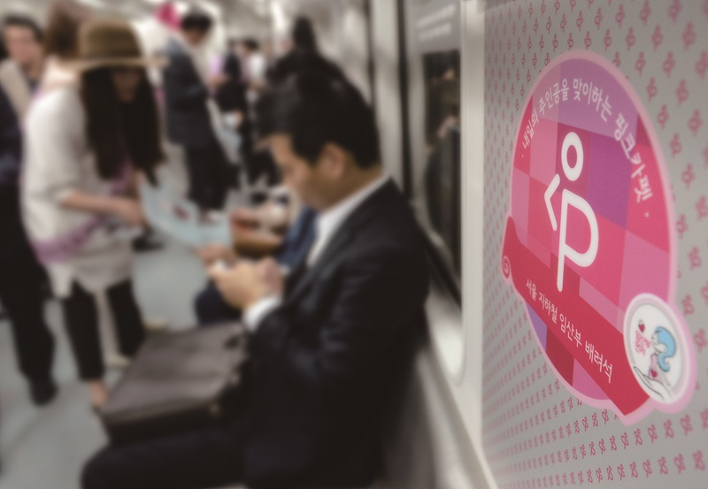

오늘도 지하철 서서가는 임산부:아무나 앉는 '배려석'
김하나 기자 입력:2024.11.27 호수:625 댓글 0
더스쿠프 심층취재 추적+
# 지하철 내 핑크색 좌석은 ‘임산부 배려석’이다. 서울시는 2015년부터 임산부가 좌석에 언제든지
편하게 앉을 수 있게 하기 위해 임산부 배려석을 도입하고, 비워둘 것을 권장하고 있다. 그러나
취지가 무색하게 임산부들의 불편은 끊이지 않고 있다.
편하게 앉을 수 있게 하기 위해 임산부 배려석을 도입하고, 비워둘 것을 권장하고 있다. 그러나
취지가 무색하게 임산부들의 불편은 끊이지 않고 있다.
# 그런데도 정부와 정치권은 어떤 정책도 내놓지 않고 있다. 툭하면 ‘저출생 위기를 해결하겠다’면서
목소리를 높이는 사람들이 정작 가까운 불편엔 귀를 닫고 있다는 거다.
출처 : 더스쿠프(https://www.thescoop.co.kr)

목소리를 높이는 사람들이 정작 가까운 불편엔 귀를 닫고 있다는 거다.
출처 : 더스쿠프(https://www.thescoop.co.kr)